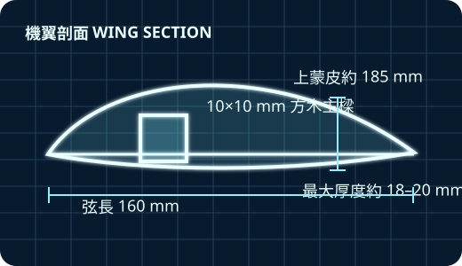
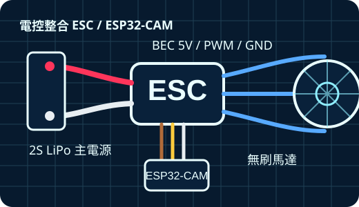
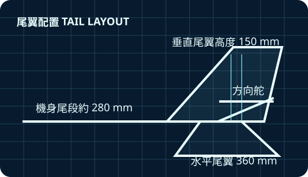

DAY 17月28日
飛行原理
- 飛機四力：升力、重力、推力、阻力
- 翼型與機翼：弦長、迎角、失速概念
- 重心與穩定性：為什麼重心會決定飛行安全
- 控制面與飛行控制：升降舵、方向控制與基本姿態
- ESP32-CAM 手機遙控概念：AP 模式、網頁控制與 PWM
- 分組與任務說明：三人一組設計與製作分工

由教授親自帶領的小班實作課程，結合理論與實作，從飛行原理、機體製作、電控整合到試飛調整，讓學員完整體驗無人定翼機的設計與飛行。

每一天都包含概念建立、示範、分組實作與檢查，讓學生不是只照做，而是理解每一個設計決策。



建立飛機四力與飛行控制的完整知識基礎。
理解翼型、弦長、主樑與上蒙皮對升力與結構的影響。
理解水平尾翼與垂直尾翼如何提供穩定與控制。
掌握主電源、BEC、PWM 訊號與共地安全。
理解馬達、螺旋槳與推力配置的基本概念。
使用 ESP32-CAM 建立手機控制介面與實作測試。
能說明飛機四力、穩定性與控制面的基本關係。
完成機身、機翼、尾翼與動力安裝。
完成 ESC、馬達、伺服與 ESP32-CAM 的接線測試。
透過試飛結果調整重心、舵量與配重。
實際時程可依天氣、學員進度與飛行安全狀況調整。
| 日期 | 時間 | 上午：理論與示範 | 午休 | 下午：實作與檢查 | 今日目標 |
|---|---|---|---|---|---|
| DAY 1 7/28 飛行原理 | 09:00–16:30 | 飛機四力、翼型、重心、控制面與手機遙控概念 | 12:00–13:00 | 分組討論、任務說明、零件認識與初步設計 | 理解飛行原理與系統架構 |
| DAY 2 7/29 機體製作 | 09:00–16:30 | 機身、機翼、尾翼與電控元件示範 | 12:00–13:00 | 結構組裝、電裝安裝、手機控制與地面測試 | 完成機體與電控整合 |
| DAY 3 7/30 試飛與調整 | 09:00–16:30 | 重心檢查、舵面校正、飛行前安全流程 | 12:00–13:00 | 地面滑行、首飛觀察、調整與成果分享 | 完成試飛與初步調整 |